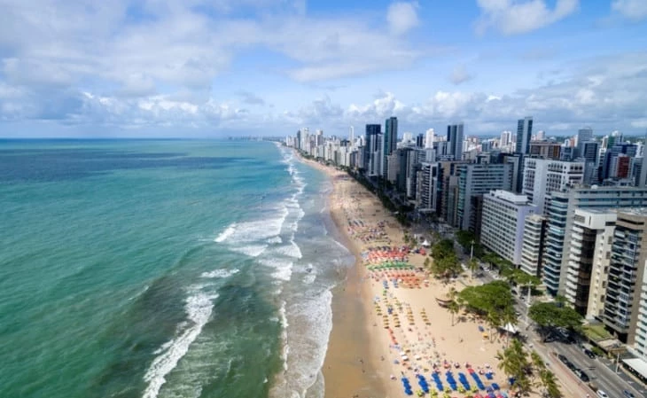
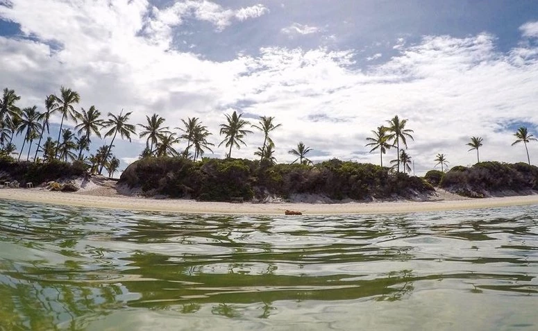

-Praia de Boa Viagem-
A Praia de Boa Viagem é a praia urbana mais famosa e importante da cidade de Recife. Ela fica no bairro da Boa Viagem e tem cerca de 7 quilômetros de extensão. Além disso, ela é delimitada de um lado pela Praia do Pina e do outro pela Praia de Piedade.

-Enseada dos Corais-
No município Cabo de Santo Agostinho, há apenas 45 minutos de Recife, fica a Praia Enseada dos Corais – um lugar tranquilo, de clima agradável e pouco explorada pelo turismo. Aproveite!
